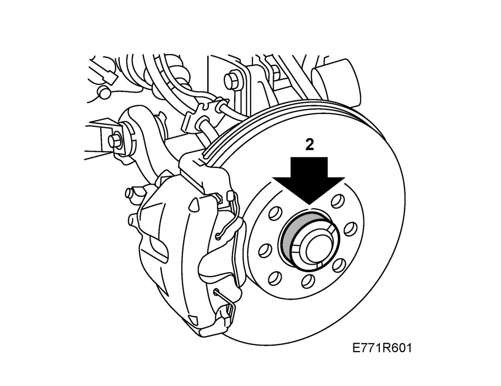
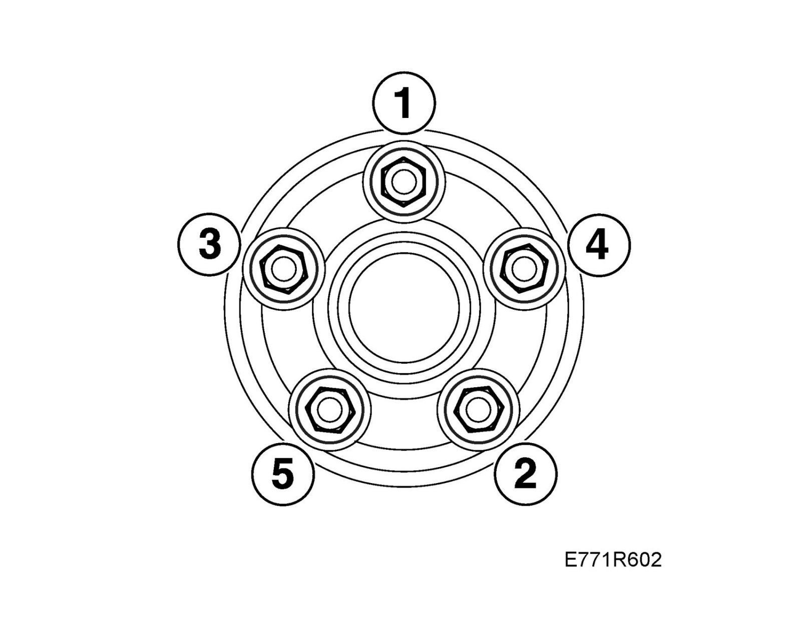

Wheels: Service and Repair
WheelTo fit
1. Clean the contact surface between the rim and the brake disc from dirt and rust.
2. Apply 30 06 442 White high-pressure grease paste to the hub.
Important
Make sure there is no grease on the contact surface between the rim and the brake disc.

3. Aluminum wheel: Oil in the bolt threads.
4. Hang the wheel in place.
Fit the bolts and tighten them alternately by hand to center the wheel.

5. Tighten the bolts alternately twice.
Important
The wheel must be suspended freely when tightening the wheel bolts.
Tightening torque, aluminum rim, 110 Nm (81 lbf ft)
Tightening torque, steel rim, 50 Nm +90° +90°, max. 110 Nm (37 lbf ft +90° +90°, max. 81 lbf ft)
Note
To avoid tightening the bolts too hard when fitting steel rims, angle tighten with a torque wrench set to 110 Nm (81 lbf ft). If the torque wrench indicates that 110 Nm (81 lbf ft) has been reached, cease angle tightening.